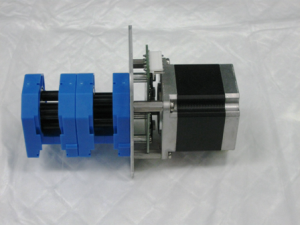
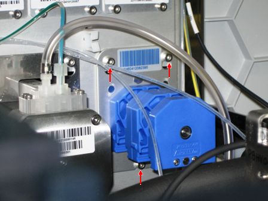
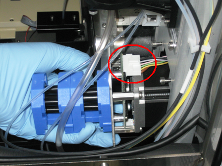
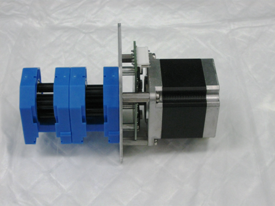

Parts and Materials Required
- Proper PPE
- Minimum of 4 MTUs
 PERISTALTIC PUMP
PERISTALTIC PUMP

Time Required
- 30 minutes
Removal Procedure
- Put on proper PPE.
- Power OFF the Instrument and PC
- Remove the Peristaltic Pump tubing assembly.
- Wait one minute to allow all fluids to drain into the bottles.
- Using a 2.5 mm hex key, loosen the 2 top screws and bottom screws that secure the pump.

- Slide out the pump module and disconnect the connector cable to the module.

- Remove the pump module.

Replacement Procedure
|
|
Change gloves. |
- Reverse the removal procedure.
- Run Instrument Setup (Firmware)
- Install the 2 pump housing top covers.
- Verify DIP switch settings.
DIP Switch Peristaltic 1 OFF 2 OFF 3 OFF 4 OFF
Prime the Pump, Output Queue Injector Tubing, and Output Queue Deactivation Fluid Tubing
Use the Prime Operation of pumping fluid through tubing to ensure proper and consistent fluid delivery (remove air from the tubing, etc.). and Dispose MTU
Operation of pumping fluid through tubing to ensure proper and consistent fluid delivery (remove air from the tubing, etc.). and Dispose MTU Multi-tube unit—Container used to process tests in the instrument. An MTU contains five separate reaction tubes. The MTU is moved through the instrument by the linear distributor and includes five tiplets for pipettiing to be used in the mag wash station. function in Service Software to inject deactivation fluid into each tube of the MTU and then dispose of the MTU. This procedure primes the system.
Multi-tube unit—Container used to process tests in the instrument. An MTU contains five separate reaction tubes. The MTU is moved through the instrument by the linear distributor and includes five tiplets for pipettiing to be used in the mag wash station. function in Service Software to inject deactivation fluid into each tube of the MTU and then dispose of the MTU. This procedure primes the system.
- In Service Software, select Front and Loading Units > Main > Output.
- Initialize Input Queue, Output Queue, and Distributor.
- Open the MTU Input Queue drawer and load at least 4 MTUs.
- Close the MTU Input Queue drawer.
- Push the MTUs.
- In the service software, select Front and Loading Units > Main > Input > Sensors & Actors.
- Press Push MTU.
- Insert an MTU into the Output Queue in order to catch any deactivation fluid that might drip during the replacement of the peristaltic pump tubing.
- In Service Software, select Distributor > Move Distributor > Single Movement to.
- Double-click MTU Input Queue to grab an MTU.
- In Service Software, select Distributor > Move > Single Movement to.
- Double-click Output Queue to place an MTU.
- Click Prime & Disp. MTU.
- Select Front and Loading Units > Main > Input > Sensors & Actors.
- Click Push MTU.
- Select Distributor > Move > Distributor Single Movement.
- Double-click Input Queue.
- Select Distributor > Move > Distributor Single Movement.
- Double-click Output Queue.
- Repeat steps 1–8 at least two more times or until all fluid lines are primed.
 button at the top of the page to send feedback, comments, or change requests.
button at the top of the page to send feedback, comments, or change requests.